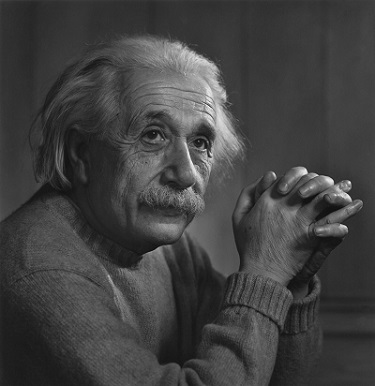

Albert Einstein
1879-1955
Albert Einstein gazing, thinking about a complicated physics formula.
Albert Einstein was born in 1879 in Germany, the first child of a bourgeois Jewish couple. The young Albert displayed an early interest in science, but he was unhappy with the principles of obedience and conformity that governed his Catholic elementary school.
Here is some information about Einstein's life:
- Albert Einstein was born 14 March 1879.
- Albert Einstein was a German-born theoretical physicist who developed the theory of relativity, one of the two pillars of modern physics.
- He is best known to the general public for his mass–energy equivalence formula E = mc2, which has been dubbed "the world's most famous equation".
- He received the 1921 Nobel Prize in Physics "for his services to theoretical physics, and especially for his discovery of the law of the photoelectric effect", a pivotal step in the development of quantum theory.
- He lived in Switzerland between 1895 and 1914, except for one year in Prague, and he received his academic diploma from the Swiss federal polytechnic school (later the Eidgenössische Technische Hochschule, ETH) in Zürich in 1900. He taught theoretical physics there between 1912 and 1914 before he left for Berlin.
- Einstein published more than 300 scientific papers and more than 150 non-scientific works. His intellectual achievements and originality have made the word "Einstein" synonymous with "genius".
"Everybody is a genius. But if you judge a fish by its ability to climb a tree, it will live its whole life believing that it is stupid"
~~ Albert Einstein